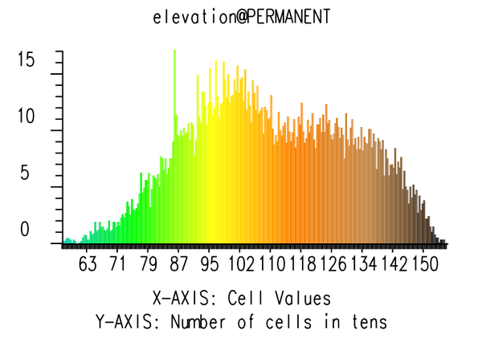
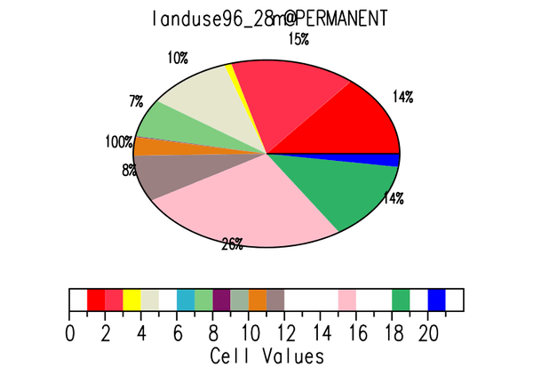

DESCRIPTION
d.histogram displays the category-value distribution for a
user-specified raster map layer, in the form of a bar chart or a pie chart.
The display will be displayed in the active display frame on the graphics
monitor, using the colors in the raster map layer's color table. The
program determines the raster map's category value distribution by counting
cells.
NOTES
d.histogram respects the current geographic region settings
and the current MASK (if one exists).
d.histogram uses the colors in the map's color look-up table
(i.e., the map's colr or colr2 file).
EXAMPLES
Running the command below will generate the bar graph shown in the figure:
g.region raster=elevation -p
d.mon wx0
d.histogram map=elevation

Figure: Bar graph histogram for elevation map
Running the command below will generate the pie graph shown in the figure:
g.region raster=landuse96_28m -p
d.histogram map=landuse96_28m style=pie

Figure: Pie graph histogram for landuse map
SEE ALSO
d.colortable,
d.frame,
d.graph,
d.linegraph,
d.mon,
d.polar,
g.region,
r.stats
AUTHOR
Dave Johnson
DBA Systems, Inc.
10560 Arrowhead Drive
Fairfax, Virginia 22030